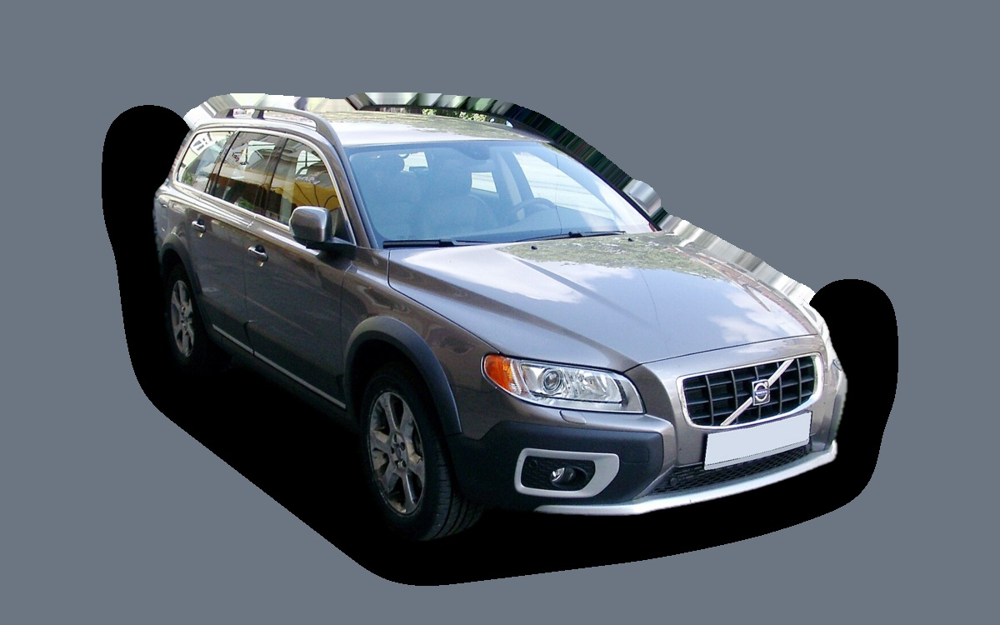

Vad kostar en Volvo XC70 per månad?
En Volvo XC70 från 2013 kostar cirka 4 042 kr i månaden, allt inräknat.
4 042 krper månad, årsmodell 2013
89 000 krpris, årsmodell 2013
353 000 krsenaste nypris
Cprisvärdhetsbetyg (2013)


Månadskostnad per årsmodell
| Årsmodell | Version i beräkningen | Pris | Per månad | Betyg |
|---|---|---|---|---|
| 2016 | D4 AWD 181, Kinetic | 124 000 kr | 4 281 kr | C |
| 2013 | D4 AWD 181, Kinetic | 89 000 kr | 4 042 kr | C |
| 2010 | D4 AWD 181, Kinetic | 71 000 kr | 3 831 kr | C |
Räknat på 5 års ägande och 1 250 mil per år, med bränslepriser från 2026-10-22. Månadskostnaden innehåller värdeminskning, drivmedel, service och reparationer, försäkring och fordonsskatt.
Så fördelas kostnaden för en 2013:a
- Värdeminskning: 488 kr/mån
- Drivmedel: 1 829 kr/mån
- Service och reparationer: 1 190 kr/mån
- Försäkring: 257 kr/mån
- Fordonsskatt: 277 kr/mån
Begagnatpriser i annonser
| Årsmodell | Medianpris | Annonser | Typiskt miltal |
|---|---|---|---|
| 2016 | 127 000 kr | 21 | 27 900 mil |
| 2015 | 119 200 kr | 18 | 30 100 mil |
| 2014 | 98 800 kr | 18 | 30 700 mil |
| 2013 | 94 900 kr | 24 | 32 100 mil |
| 2012 | 80 000 kr | 16 | 32 700 mil |
| 2011 | 75 000 kr | 18 | 33 200 mil |
| 2010 | 87 400 kr | 18 | 33 700 mil |
| 2009 | 55 000 kr | 13 | 35 500 mil |
| 2008 | 62 200 kr | 30 | 36 000 mil |
Medianpriset i svenska annonser per årsmodell i oktober 2026 (källa: Blocket). Annonspriser är utgångspriser, och slutpriset kan bli lägre.
Motorer och versioner
| Motor | Drivmedel | Effekt | 0–100 km/h | Förbrukning (WLTP) | Räckvidd | Årsmodeller | Pristillägg |
|---|---|---|---|---|---|---|---|
| D4 AWD 181 | Diesel | 181 hk | 9 s | 5,8 l/100 km | – | 2008–2016 | – |
| D5 AWD 220 | Diesel | 220 hk | 8,1 s | 6,2 l/100 km | – | 2008–2016 | +40 900 kr |
| T6 AWD 304 | Bensin | 304 hk | 6,9 s | 10,3 l/100 km | – | 2008–2016 | +130 900 kr |
- Utrustning: Kinetic, Summum (+30 000 kr)
Fakta
- Kaross
- Kombi
- Årsmodeller
- 2008–2016
- Senaste nypris
- 353 000 kr
- Bagage
- 555 liter
- Euro NCAP
- 5 av 5 stjärnor
- Nybilsgaranti
- 3 år
- Driftsäkerhet
- 3 av 5
- Helförsäkring, uppskattning
- 6 600 kr/år
- Service, uppskattning
- 4 800 kr/år
Vanliga fel att ha koll på
- Vinkelväxel och Haldex-koppling, reparation cirka 15 000 kr
- Automatlådan (Aisin TF-80SC) går sönder, reparation cirka 55 000 kr
- Insprutare och virvelspjäll (femcylindrig diesel), reparation cirka 7 000 kr
- Vevhusventilation (PCV) sätts igen, reparation cirka 6 000 kr
- Partikelfilter och EGR (diesel), reparation cirka 9 000 kr
- Tvåmassesvänghjul och koppling, reparation cirka 19 000 kr
- Kamkedja (sexcylindrig), reparation cirka 23 000 kr
- Kamrem och vattenpump förstörs av oljeläckage, reparation cirka 11 000 kr
- Turbon går sönder, reparation cirka 15 000 kr
Felen gäller vissa motorer och årsmodeller. I kalkylatorn räknas risken för just den version du väljer.
Fördelar och nackdelar
Fördel
Rymlig kombi med fyrhjulsdrift och högre markfrigång, bra för svenska vintrar.
Nackdel
Högre förbrukning än en vanlig V70.
Liknande bilar
 Skoda Superb Kombi III4 114 kr/mån som 2020:a
Skoda Superb Kombi III4 114 kr/mån som 2020:a Volkswagen ID. Buzz4 131 kr/mån som 2023:a
Volkswagen ID. Buzz4 131 kr/mån som 2023:a Volkswagen Touran4 165 kr/mån som 2022:a
Volkswagen Touran4 165 kr/mån som 2022:a Volvo V904 171 kr/mån som 2022:a
Volvo V904 171 kr/mån som 2022:a Audi A4 Avant3 879 kr/mån som 2021:a
Audi A4 Avant3 879 kr/mån som 2021:a Saab 9-5 SportCombi3 857 kr/mån som 2007:a
Saab 9-5 SportCombi3 857 kr/mån som 2007:a
Uppdaterad 2026-10-27 · annonsdata okt 2026